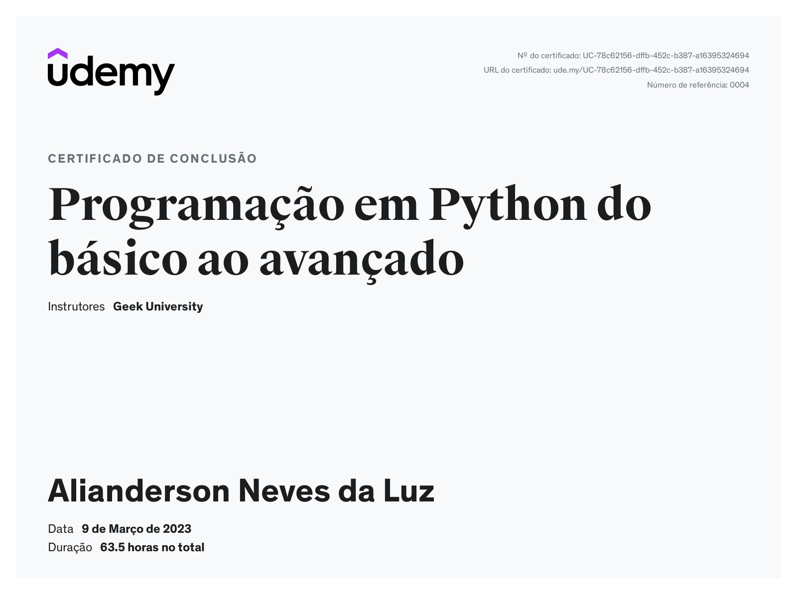
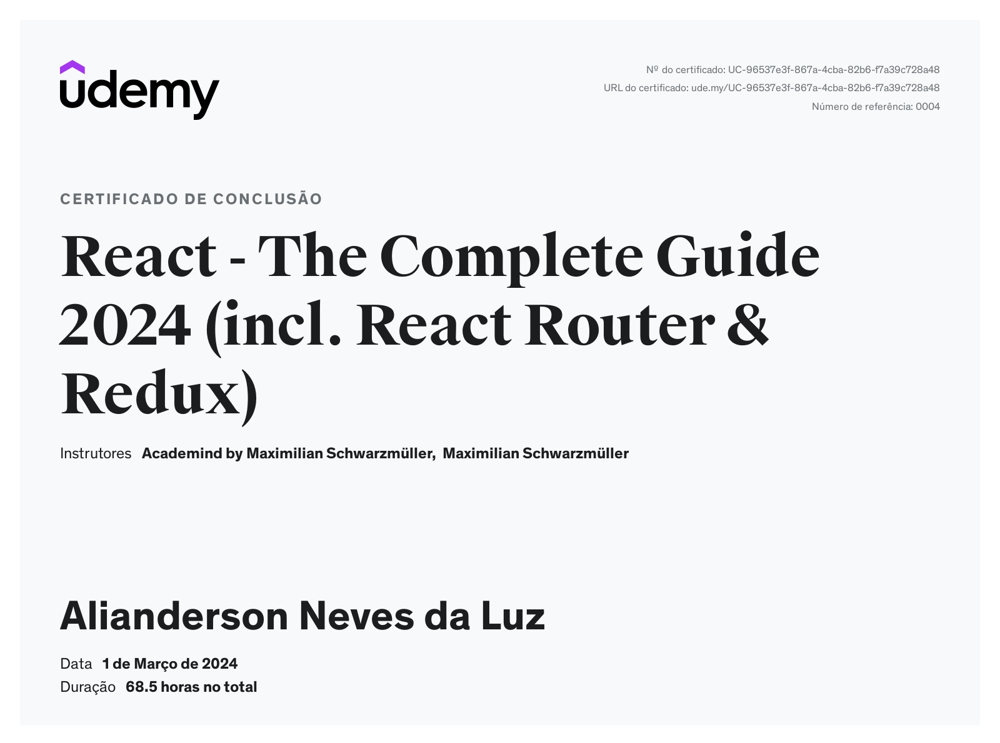
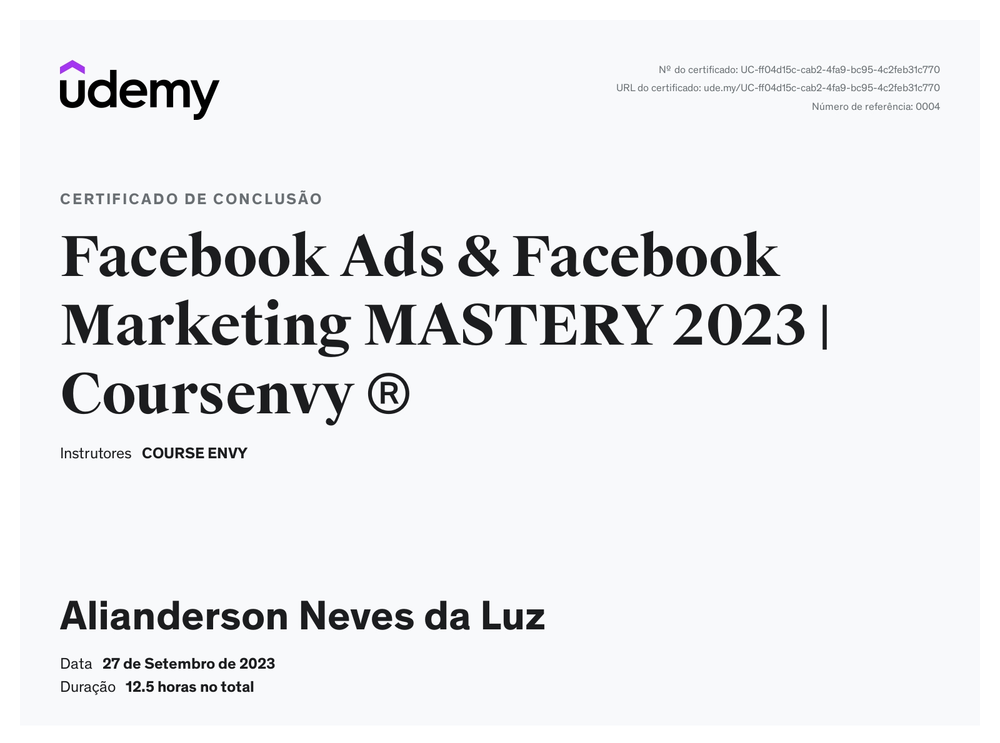

Profissionalmente, adquiri habilidades abrangentes, desde o desenvolvimento frontend até o backend, me capacitando a ter desafios de uma ponta a outras no desenvolvimento. Este certificado é uma demonstração de meu compromisso com a excelência sendo uma validação de minha capacidade de criar soluções completas e eficazes. Estou pronto para aplicar os conhecimentos adquiridos neste curso em projetos futuros, impulsionando assim minha contribuição de maneira significativa.

QUALIFICAÇÕES
Python
Com o certificado em Python, posso automatizar tarefas, desenvolver chatbots e explorar a inteligência artificial. Com habilidades em Python, posso impulsionar projetos com eficiência, seja automatizando processos, coletando dados da web ou desenvolvendo modelos de machine learning.

QUALIFICAÇÕES
Desenvolvedor Web
Com o certificado em Desenvolvimento Web (React), estou pronto para uma série de oportunidades profissionais. Posso criar sites dinâmicos e responsivos, utilizando tecnologias como HTML, CSS e JavaScript. Além disso, estou apto a trabalhar com frameworks de frontend, como React, Angular ou Vue.js, e também a construir APIs RESTful para comunicação entre o frontend e o backend.
Com habilidades sólidas em desenvolvimento web, posso desenvolver interfaces de usuário intuitivas e experiências de usuário excepcionais. Além disso, estou familiarizado com práticas modernas de desenvolvimento, como integração contínua, entrega contínua e controle de versão com Git.

QUALIFICAÇÕES
Facebook ADS e Marketing
Certificação em Marketing Digital e Facebook ADS. Com essa certificação, estou preparado para criar estratégias eficazes, gerenciar campanhas publicitárias, otimizar presença online, analisar resultados, construir relacionamentos com clientes e manter-me atualizado com as últimas tendências.